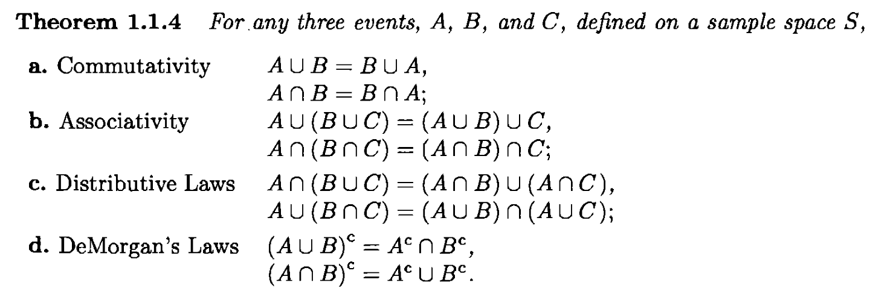
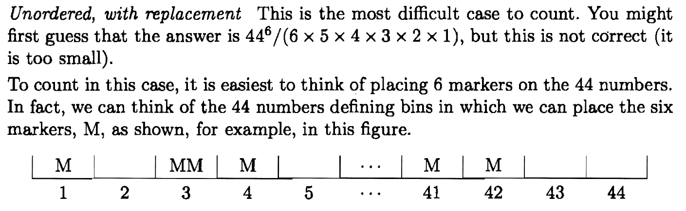
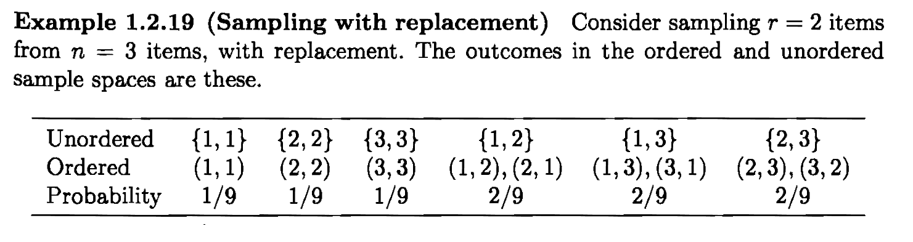

Probability and Statistics

Union Laws
!(a && b && c) == !a || !b || !c
!(a || b || c) == !a && !b && !cMore generally, De Morgan's Laws also hold for any indexing set, whether it's countable or not:
Theorem. Let $I$ be any indexing set. Then \begin{align*} \bar{\Cup_{i \in I} A_i} &= \Cap_{i \in I} \bar{A_i} \\ \bar{\Cap_{i \in I} A_i} &= \Cup_{i \in I} \bar{A_i}. \end{align*}
Proof. We'll just prove the first equality. If an element $x$ belongs to the set on the LHS, then it must not be in any $A_i,$ i.e. it belongs to all $\bar{A_i},$ and so it must belong to their intersection on the RHS. \qed
Sigma Algebra
Definition. A collection $\BB$ of subsets of $S$ is
called a sigma algebra if it satisfies:
Corollary. If $\BB$ is a sigma algebra, then it contains
$S$ and also closed under countable intersection:
Axioms of Probability
Definition. Let $S$ be a sample space with sigma algebra
$\BB.$ A probability function on $\BB$ is a function
$P:\BB\longmapsto [0, 1]$ s.t.
Corollary.

Inclusion Exclusion Principle
Theorem. If $A_1,\ldots, A_n\in \BB$ then $$P(\cup_i A_i) = \sum_{\L_1} P(\L_1) - \sum_{\L_2} P(\L_2) + \cdots \pm \sum_{\L_n} P(\L_n),$$ where $\L_k$ denotes any $k$-intersection, e.g. $A_1 \cap \cdots \cap A_k,$ and the sum $\sum_{\L_k} $is over all such possible $k$-intersections.
Theorem. If $P$ is a probability function, then
Remark. Can get a more general version of Bonferroni from Boole: $$P(\cap_{i=1}^n A_i) \geq \sum_{i=1}^n P(A_i) - (n-1).$$
Counting
The number of ways of choosing $k$ balls from a collection of $n$ balls, provided the order matters or not and you can replace selected balls or not:
| With replacement | Without replacement | |
| Ordered | $$n^k$$ | $$\frac{n!}{(n-k)!} = {n \choose k} k!$$ |
| Unordered | $${n - 1 + k \choose k}$$ | $${n \choose k}$$ |

The end doesn't uniquely identify the means
In order to correctly calculate the probability of an outcome, you have to take into account the whole sequence of events leading up to the outcome and not just the end result:

Reference
- Statistical Inference by Casella and Berger.
- Everything else from the web.